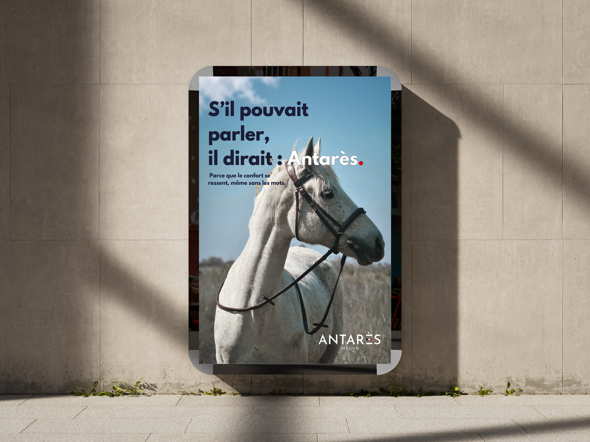

Antares

Affiches de la campagne


À propos du projet
Ce projet créatif, axé sur la conception d'affiches publicitaires et promotionnelles, a été réalisé dans un cadre fictif pour une candidature à un stage de BTS de communication. L'objectif était de démontrer mes compétences et de mettre en avant mon univers graphique.
Objectifs
- Construire un univers visuel fort et marquant, propre au projet Antarès et adapté à l'identité graphique de la marque.
- Faire connaître et faire aimer la marque — les deux objectifs principaux portés par ces deux affiches.
Cible
Les pratiquants d'équitation, et plus particulièrement les cavaliers axés sur le bien-être et le confort de leur animal.
Choix Créatifs
J'ai choisi d'intégrer une photo réalisée lors d'un shooting photo personnel pour la première affiche, accompagnée d'une accroche forte : « S'il pouvait parler, il dirait Antarès ». Cela renforce l'évidence de la marque, soulignée par le sous-titre : « Parce que le confort se ressent, même sans les mots ».
Le visuel et son accroche apportent tout le contexte au message de la marque et mettent en avant le bien-être et le confort équin.
Évaluation
Point fort — L'accroche « S'il pouvait parler, il dirait Antarès » est percutante et mémorable : elle crée une connexion émotionnelle immédiate avec la cible cavalière et ancre le message de la marque sans avoir besoin de développement.
Axe d'amélioration — La mise en avant des produits directement (en close-up, scénarisés), plutôt que des photos prises hors contexte ou libres de droits, renforcerait la cohérence visuelle et l'image haute gamme de la marque.